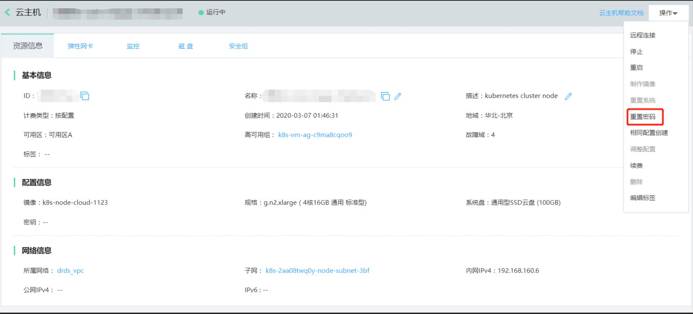

在京东云上部署 TiDB 集群
创建 Kubernetes 集群
参考官方文档 https://docs.jdcloud.com/cn/jcs-for-kubernetes/create-to-cluster
连接集群
参考官方文档 https://docs.jdcloud.com/cn/jcs-for-kubernetes/connect-to-cluster
安装 Helm
通过 https://github.com/helm/helm/releases 找到要下载的 helm 版本， TiDB Operator 要求 Helm 版本 < 3.0
wget https://get.helm.sh/helm-v2.16.1-linux-amd64.tar.gz解压缩
tar -zxvf helm-v2.16.1-linux-amd64.tar.gz在解压后的目录中找到二进制文件，将其移动到所需的位置并添加执行权限
mv linux-amd64/helm /usr/local/bin/helm chmod +x /usr/local/bin/helm运行以下命令
helm help为 Tiller 添加权限，详见 Role-based Access Control，新建 rbac-config.yaml ，内容如下：
apiVersion: v1 kind: ServiceAccount metadata: name: tiller namespace: kube-system --- apiVersion: rbac.authorization.k8s.io/v1beta1 kind: ClusterRoleBinding metadata: name: tiller roleRef: apiGroup: rbac.authorization.k8s.io kind: ClusterRole name: cluster-admin subjects: - kind: ServiceAccount name: tiller namespace: kube-system初始化 Helm 并安装 Tiller 服务
helm init --upgrade --service-account tiller如果无法下载镜像，可以用
--tiller-image参数替换镜像地址运行以下命令
helm version出现以下信息，确认安装成功
Client: &version.Version{SemVer:"v2.16.1", GitCommit:"bbdfe5e7803a12bbdf97e94cd847859890cf4050", GitTreeState:"clean"} Server: &version.Version{SemVer:"v2.16.1", GitCommit:"bbdfe5e7803a12bbdf97e94cd847859890cf4050", GitTreeState:"clean"}配置 PingCAP 官方 chart 仓库
helm repo add pingcap https://charts.pingcap.org/
安装 TiDB Operator
TiDB Operator 使用 CRD (Custom Resource Definition) 扩展 Kubernetes，所以要使用 TiDB Operator，必须先创建 TidbCluster 自定义资源类型。只需要在你的 Kubernetes 集群上创建一次即可。
kubectl apply -f https://raw.githubusercontent.com/pingcap/tidb-operator/master/manifests/crd.yaml && kubectl get crd tidbclusters.pingcap.com
创建 TidbCluster 自定义资源类型后，接下来在 Kubernetes 集群上安装 TiDB Operator。
获取你要安装的
tidb-operatorchart 中的values.yaml文件：mkdir -p /home/tidb/tidb-operator && \ helm inspect values pingcap/tidb-operator --version=<chart-version> > /home/tidb/tidb-operator/values-tidb-operator.yaml注意：
<chart-version>在后续文中代表 chart 版本，例如v1.0.0，可以通过helm search -l tidb-operator查看当前支持的版本配置 TiDB Operator
TiDB Operator 里面会用到 k8s.gcr.io/kube-scheduler 镜像，如果下载不了该镜像，可以通过修改
/home/tidb/tidb-operator/values-tidb-operator.yaml文件中的scheduler.kubeSchedulerImageName替换镜像。安装 TiDB Operator
helm install pingcap/tidb-operator --name=tidb-operator --namespace=tidb-admin --version=<chart-version> -f /home/tidb/tidb-operator/values-tidb-operator.yaml && \ kubectl get po -n tidb-admin -l app.kubernetes.io/name=tidb-operator
自定义 TiDB Operator
通过修改 /home/tidb/tidb-operator/values-tidb-operator.yaml 中的配置自定义 TiDB Operator。后续文档使用 values.yaml 指代 /home/tidb/tidb-operator/values-tidb-operator.yaml。
TiDB Operator 有两个组件：
- tidb-controller-manager
- tidb-scheduler
这两个组件是无状态的，通过 Deployment 部署。你可以在 values.yaml 中自定义资源 limit 、request 和 replicas。
修改为 values.yaml 后，执行下面命令使配置生效：
helm upgrade tidb-operator pingcap/tidb-operator --version=<chart-version> -f /home/tidb/tidb-operator/values-tidb-operator.yaml
设置 ulimit
TiDB 默认会使用很多文件描述符，工作节点和上面的 Docker 进程的 ulimit 必须设置大于等于 1048576：
重置京东云 Kubernetes 集群所有 Node 的登录密码

控制台登陆 Node
设置工作节点的
ulimit值，详情可以参考如何设置 ulimitsudo vim /etc/security/limits.conf设置 root 账号的
soft和hard的nofile大于等于1048576。设置 Docker 服务的
ulimitsudo vim /etc/systemd/system/docker.service设置
LimitNOFILE大于等于1048576修改完后重启 Docker 服务
systemctl daemon-reload systemctl restart docker
注意：
LimitNOFILE需要显式设置为1048576或者更大，而不是默认的infinity，由于systemd的 bug，infinity在systemd某些版本中指的是65536。
配置 TiDB 集群
配置 StorageClass
京东云为 Kubernetes 集群提供了自定义卷插件 kubernetes.io/jdcloud-ebs ， 将 provisioner 定义为京东云自定义卷插件，可以使用京东云云硬盘为 Kubernetes 集群提供持久化存储。目前，在 Kubernetes 集群服务中，提供三种 StorageClass:
kubectl get storageclass
NAME PROVISIONER AGE
default (default) kubernetes.io/jdcloud-ebs 39d
jdcloud-hdd kubernetes.io/jdcloud-ebs 39d
jdcloud-ssd kubernetes.io/jdcloud-ebs 39d
您也可以创建自定义的 StorageClass ：
kind: StorageClass
apiVersion: storage.k8s.io/v1
metadata:
name: mystorageclass-hdd1
provisioner: kubernetes.io/jdcloud-ebs
parameters:
zones: cn-north-1a, cn-north-1b
fstype: ext4
reclaimPolicy: Retain
参数说明：
provisioner ：设置参数值kubernetes.io/jdcloud-ebs，且不可修改，标识使用京东云云硬盘Provisioner插件创建。
reclaimPolicy ：由 storage class 动态创建的 Persistent Volume 会在的 reclaimPolicy 字段中指定回收策略，可以是 Delete 或者 Retain。如果 storageClass 对象被创建时没有指定 reclaimPolicy ，它将默认为 Delete。
parameters
type：设置参数值为 ssd.gp1 、ssd.io1 或 hdd.std1 ，分别对应京东云的通用型 SSD 云盘、性能型 SSD 云盘和容量型 HDD 云盘
| StorageClass type | 云硬盘类型 | 容量范围 | 步长 |
|---|---|---|---|
| hdd.std1 | 容量型hdd | [20-16000]GiB | 10GiB |
| ssd.gp1 | 通用型ssd | [20-16000]GiB | 10GiB |
| ssd.io1 | 性能型ssd | [20-16000]GiB | 10GiB |
fstype ：设置文件系统类型，可选参数值为 xfs 和 ext4 ，如未指定 fstype ，将使用 ext4 作为默认的文件系统类型；例如： fstype=ext4
更多参数说明，参考参数说明 https://docs.jdcloud.com/cn/jcs-for-kubernetes/deploy-storageclass 。
获取 Values 文件
通过下面命令获取待安装的 tidb-cluster chart 的 values.yaml 配置文件：
mkdir -p /home/tidb/<release-name> && \
helm inspect values pingcap/tidb-cluster --version=<chart-version> > /home/tidb/<release-name>/values-<release-name>.yaml
注意：
/home/tidb可以替换为你想用的目录。release-name将会作为 Kubernetes 相关资源（例如 Pod，Service 等）的前缀名，可以起一个方便记忆的名字，要求全局唯一，通过helm ls -q可以查看集群中已经有的release-name。chart-version是 tidb-cluster chart 发布的版本，可以通过helm search -l tidb-cluster查看当前支持的版本。- 下文会用
values.yaml指代/home/tidb/<release-name>/values-<release-name>.yaml。
集群拓扑
默认部署的集群拓扑是：3 个 PD Pod，3 个 TiKV Pod，2 个 TiDB Pod 和 1 个监控 Pod。在该部署拓扑下根据数据高可用原则，TiDB Operator 扩展调度器要求 Kubernetes 集群中至少有 3 个节点。如果 Kubernetes 集群节点个数少于 3 个，将会导致有一个 PD Pod 处于 Pending 状态，而 TiKV 和 TiDB Pod 也都不会被创建。
Kubernetes 集群节点个数少于 3 个时，为了使 TiDB 集群能启动起来，可以将默认部署的 PD 和 TiKV Pod 个数都减小到 1 个，或者将 values.yaml 中 schedulerName 改为 Kubernetes 内置调度器 default-scheduler。
警告：
default-scheduler仅适用于演示环境，改为default-scheduler后， TiDB 集群的调度将无法保证数据高可用，另外一些其它特性也无法支持，例如 TiDB Pod StableScheduling 等。
其它更多配置参数请参考 TiDB 集群部署配置文档。
部署 TiDB 集群
注意：
- 京东云硬盘支持创建的磁盘大小范围为
[20-16000]GiB,步长10G,values.yaml里PD、TiKV、Monitor、Drainer默认的磁盘大小不满足京东云盘的最小磁盘要求，需要修改为磁盘范围内的大小才可以正确创建 PV 。
修改 Service
如果要使用京东云Kubernetes集成的负载均衡服务，需要修改 values.yaml 中 tidb 下的 Service 指定 annotations service.beta.kubernetes.io/jdcloud-load-balancer-spec ，因为 TiDB 的 service 下面有两个 Port，下面配置 listeners 写两个
tidb:
service:
type: LoadBalancer
exposeStatus: true
annotations:
service.beta.kubernetes.io/jdcloud-load-balancer-spec: |
version: "v1" # 【版本号】只支持"v1"
loadBalancerType: nlb # 【必填项】要创建的JD LB的类型,创建后不支持变更
internal: true # true 表示 LB 实例不会绑定公网 IP,只内部使用； false 表示为外部服务，会绑定公网 IP。修改可能会触发 IP的创建，绑定或者解绑，不会自动删除
listeners: # 每个 port 对应的LB 的 listener 的配置,数量必须和 ports 的数量一致
- protocol: "tcp" # 修改可能触发删除重建，导致服务短暂中断，listener 的协议, alb:Tcp,Http,Https,Tls;nlb:Tcp;dnlb:Tcp
connectionIdleTimeSeconds: 1800 # 连接超时时间，alb/nlb 有效
backend: # 关于 JD LB 的 backend 的通用配置
connectionDrainingSeconds: 300 # 【nlb】移除 target 前，连接的最大保持时间，默认 300s，取值范围 [0-3600] (Optional)
sessionStickyTimeout: 300 # 【nlb】会话保持超时时间， sessionStickiness开启时生效，默认 300s, 取值范围 [1-3600] (Optional)
algorithm: "IpHash" # 调度算法, 取值范围为 [ IpHash, RoundRobin,和 LeastConn ]（取值范围的含义分别为：源 Ip hash，加权轮询和加权最小连接），默认为 RoundRobin （加权轮询） (Optional)，nlb：；dnlb：；alb
- protocol: "tcp"
connectionIdleTimeSeconds: 1800
backend:
connectionDrainingSeconds: 300
sessionStickyTimeout: 300
algorithm: "IpHash"
关于LoadBalance的更多参数参考官方文档 https://docs.jdcloud.com/cn/jcs-for-kubernetes/deploy-service-new
创建 Secret
kubectl create secret generic <tidb-secretname> --from-literal=root=<password> --namespace=<namespace>
修改 values.yaml 的 tidb 下的 passwordSecretName 为 <tidb-secretname> 设置 TiDB 的初始密码。
values.yaml 文件修改好以后，用以下命令创建 TiDB 集群
helm install pingcap/tidb-cluster --name=<release-name> --namespace=<namespace> --version=<chart-version> -f /home/tidb/<release-name>/values-<release-name>.yaml
注意：
namespace是命名空间，你可以起一个方便记忆的名字，比如和release-name相同的名称。
通过下面命令可以查看 Pod 状态：
kubectl get po -n <namespace> -l app.kubernetes.io/instance=<release-name>
单个 Kubernetes 集群中可以利用 TiDB Operator 部署管理多套 TiDB 集群，重复以上命令并将 release-name 替换成不同名字即可。不同集群既可以在相同 namespace 中，也可以在不同 namespace 中，可根据实际需求进行选择。
TiDB 集群创建好后，通过下面的命令查看 TiDB Service 的 ClusterIP ：
$kubectl -n jddb get svc -l app.kubernetes.io/instance=jddb
NAME TYPE CLUSTER-IP EXTERNAL-IP
jddb-discovery ClusterIP 192.168.189.43 <none> 10261/TCP 65m
jddb-grafana NodePort 192.168.190.132 <none> 3000:32445/TCP 65m
jddb-monitor-reloader NodePort 192.168.188.141 <none> 9089:30732/TCP 65m
jddb-pd ClusterIP 192.168.188.210 <none> 2379/TCP 65m
jddb-pd-peer ClusterIP None <none> 2380/TCP 65m
jddb-prometheus NodePort 192.168.186.63 <none> 9090:30415/TCP 65m
jddb-tidb LoadBalancer 192.168.188.201 192.168.176.10 4000:30487/TCP,10080:32045/TCP 65m
jddb-tidb-peer ClusterIP None <none> 10080/TCP 62m
jddb-tikv-peer ClusterIP None <none> 20160/TCP 63m
其中 jddb-tidb 即是 TiDB 的 Svc ，集群内部的 Pod 可以通过 CLUSTER-IP 访问 TiDB 服务，同 VPC 下的云主机可以通过 EXTERNAL-IP 访问 TiDB 集群。